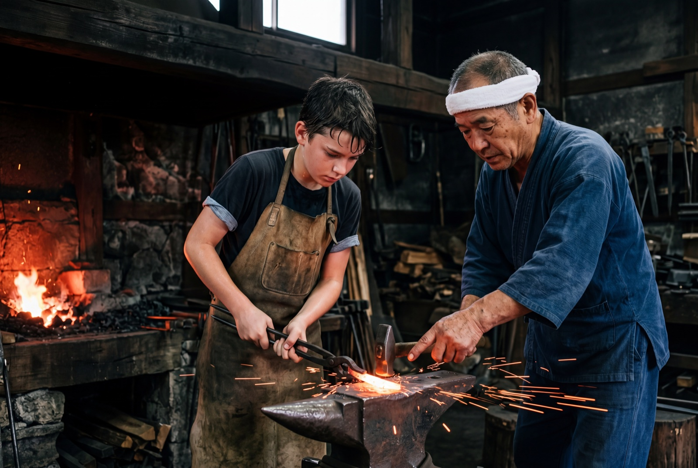

Day 10 · Kameoka · Masahiro Tantoujou Sword Forge
The Bar Mitzvah was in February. The maker was made in March.
Kameoka. Twenty-five minutes by JR San-in line, west of Kyoto. A small forge behind a sliding wooden door. The Brain found this forge eight months ago — cross-referencing Eli's Learning Layer (maker interest, historical interest, physical activity preference) against the Bar Mitzvah trip intent Rachel had stored in the fall. It booked an interpreter, Hanako, who specializes in craft vocabulary and pre-briefed Masahiro-sensei on the family context before the day. The master knew Eli was 13, that this was the first time he had held a forging hammer, and that the visit meant something beyond tourism.
Eli is given a 15-centimeter bar of unforged steel. He will turn it into a kogatana — a small kitchen blade, useful, not symbolic. Four hours. The forge is hotter than he expected. The hammer is heavier than he expected. The first strike misses the steel and sparks against the anvil. He flinches. Masahiro-sensei laughs gently, repositions Eli's hands, says one word Hanako renders as "again."
For three hours and forty minutes, that is what Eli does. Strike. Heat. Strike. Heat. He stops asking Hanako to translate. He stops checking his phone. At hour two his shoulder hurts and he wants to stop. He doesn't. At hour three the steel starts to take a shape that did not exist when he walked in. At three-forty, Masahiro-sensei tells Hanako to tell Eli that the next strike will be the last. Eli nods. He brings the hammer down. The blade is finished.
For those four hours, David's and Rachel's phones were quiet. Not because the Brain had nothing to do — the schedule was running, the afternoon restaurant hold was active, the group-chat digest was queued. The Brain was running. The family rule for immersive anchors is no interruptions, and the Brain had that rule. It held everything until the forge door opened.

Day 10 · 亀岡 · Kameoka forge
刀
At 16:42 JST, four criteria were met: 4-hour duration, physical product completed, phone not checked for 4 hours, self-reported pride on the return train. The Brain wrote to Eli's Identity Layer — not because Rachel instructed it to, but because the criteria thresholds were crossed.
Identity Layer · write event · 2026-03-24T16:42 JST
brain.identity.write({
member: "eli",
field: "self-concept.maker",
value: true,
source: "trip-2026-03-japan / day-10 / kameoka-forge",
evidence: [
"4-hour-attendance",
"physical-product-completed",
"phone-not-checked-during-task",
"self-reported-pride-on-return-train"
],
contract: {
on-return: "merge-into-home-brain.identity",
on-dissolve: "persist" // identity writes outlive the Disposable Brain
}
})
A Bar Mitzvah is the moment a community recognizes a child as old enough to be responsible for their own choices. The synagogue did that in February. Four criteria met. One Identity Layer write. Eli is now a maker in the Brain's permanent record.
Backstage · Identity Layer write
Identity writes are rare. They persist past the Disposable Brain's death. This write was triggered autonomously — 4 evidence signals crossed threshold, no Rachel instruction required. It will outlive the trip, the Brain that hosted it, and the schema version it was written in. By next March, the Home Brain will have been treating Eli as a maker for a full year.